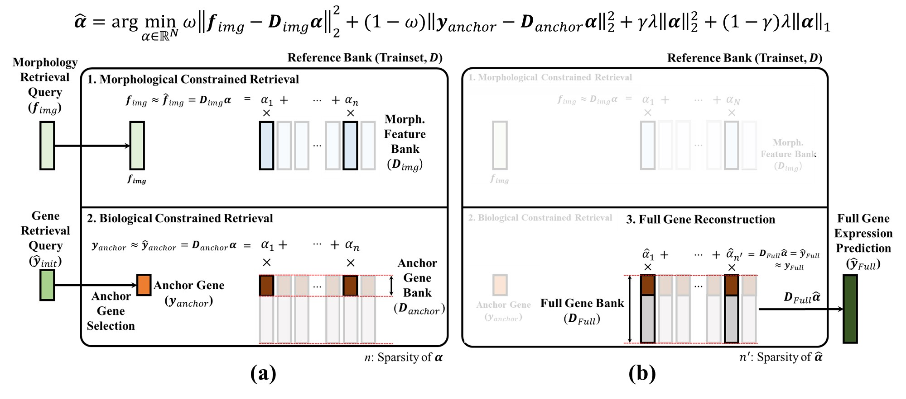
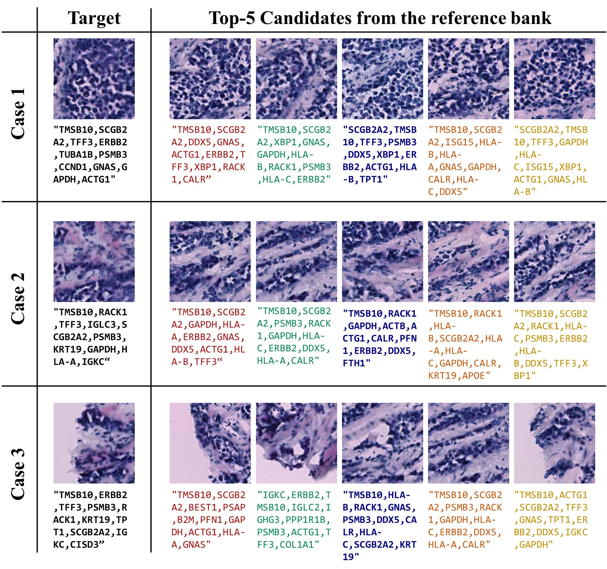

- Knowledge Expansion via RAG. GeneRAG overcomes the closed-loop, fixed-parameter limitation of conventional models by decoupling knowledge storage from training — an expandable Reference Bank is retrieved at inference time, with no weight updates needed to grow or swap knowledge.
- Zero-Shot Prediction. It enhances any base model and successfully reconstructs thousands of genes never seen during the backbone’s training — up to 5,000 unseen genes per spot — without fine-tuning.
- Plug-and-Play. A model-agnostic design integrates seamlessly with any existing Image-to-ST architecture (e.g. Stem, UNI, EXAONE-Path 2.5) — no structural modification, no re-training.
Abstract
Spatial transcriptomics (ST) is pivotal for deciphering molecular organization, yet cross-modal variability challenges accurate H&E-based profiling. Existing models struggle to generalize to unseen genes and lack clinical interpretability. We propose GeneRAG, a model-agnostic Retrieval-Augmented Generation framework with a Dual-Constrained Retrieval module. Unlike conventional black-box networks that rely solely on fixed parameters, GeneRAG explicitly decouples knowledge storage from model training. By optimizing an ElasticNet-based sparse sampling matrix, GeneRAG integrates morphological and biological constraints to fetch relevant samples from a pre-constructed bank. Leveraging conserved gene correlations, this enables accurate reconstruction of comprehensive profiles, including entirely unseen genes.
On the HEST-1k dataset, GeneRAG seamlessly enhances state-of-the-art models in a plug-and-play manner, improving Stem's PCC-10 from 0.8322 to 0.8711 (Breast). For zero-shot generalization to 5,000 genes, Stem + GeneRAG achieves a PCC-5000 of 0.5188, vastly outperforming DeepSpot (0.0748). GeneRAG provides robust, transparent predictions, highlighting its potential for clinical deployment.
No fine-tuning, no re-training
Validated on Stem, UNI, EXAONE-Path 2.5
Each weight traces back to a training spot
Dual-Constrained Retrieval
GeneRAG formulates retrieval as a convex optimization that simultaneously enforces morphological and biological constraints. Given the Morphology Bank $D_{img}\!\in\!\mathbb{R}^{d\times N}$ (frozen visual embeddings of $N$ training spots), an Anchor Gene Bank $D_{anchor}\!\in\!\mathbb{R}^{k\times N}$ (a subset of the Full Gene Bank), and the hybrid query $(f_{img}, y_{anchor})$, GeneRAG solves the following ElasticNet problem for the sparse sampling vector $\hat{\alpha}\!\in\!\mathbb{R}^{N}$:
The first two terms balance morphology vs. biology through $\omega\!\in\![0,1]$; the ElasticNet regularizer enforces sparsity (typically $\sim\!50$ active references per query) while stabilizing the selection. Equation (1) is solved as a multi-output ElasticNet via batched FISTA, completing slide-level optimization within minutes on a single GPU.
Given $\hat{\alpha}$, the full transcriptomic prediction is a simple linear combination over the Full Gene Bank $D_{full}$:
Because $D_{full}$ retains the complete expression panel (including genes beyond the backbone's training subset), retrieval-based reconstruction in Eq. (2) achieves zero-shot extrapolation for unseen genes, leveraging the biologically conserved gene-to-gene correlations among morphologically similar reference patches.

In-Domain Calibration (Core HVG)
On the HEST-1k Core HVG setup (top 300 HVGs for Breast; top 200 HVGs for Kidney and Prostate), plugging GeneRAG on top of any backbone — generative model (Stem), H&E-only foundation model (UNI), or multi-modal foundation model (EXAONE-Path 2.5) — consistently calibrates and improves predictive performance.
| Model | GeneRAG | Breast | Kidney | Prostate | ||||||
|---|---|---|---|---|---|---|---|---|---|---|
| PCC-10 | PCC-50 | PCC-300 | PCC-10 | PCC-50 | PCC-200 | PCC-10 | PCC-50 | PCC-200 | ||
| HisToGene | ✗ | 0.6812 | 0.6345 | 0.5250 | 0.4294 | 0.3503 | 0.0905 | 0.4035 | 0.3554 | 0.2235 |
| BLEEP | ✗ | 0.7727 | 0.7141 | 0.5652 | 0.4998 | 0.4221 | 0.3143 | 0.5798 | 0.5102 | 0.3158 |
| TRIPLEX | ✗ | 0.7907 | 0.7394 | 0.5766 | 0.4654 | 0.4105 | 0.3165 | 0.6173 | 0.4953 | 0.3601 |
| Stem | ✗ | 0.8322 | 0.7696 | 0.6228 | 0.5768 | 0.4989 | 0.3354 | 0.6310 | 0.5546 | 0.3937 |
| UNI | ✗ | 0.8301 | 0.7909 | 0.6024 | 0.4828 | 0.3888 | 0.2715 | 0.5548 | 0.4761 | 0.3076 |
| CONCH | ✗ | 0.7799 | 0.7467 | 0.6043 | 0.3583 | 0.3109 | 0.2243 | 0.5660 | 0.4715 | 0.3171 |
| EXAONE-Path 2.5 | ✗ | 0.8217 | 0.7850 | 0.6251 | 0.4584 | 0.4023 | 0.3009 | 0.6204 | 0.5313 | 0.3536 |
| Stem | ✓ | 0.8711 | 0.8275 | 0.7029 | 0.6068 | 0.5419 | 0.4055 | 0.7001 | 0.6693 | 0.5415 |
| UNI | ✓ | 0.8670 | 0.8257 | 0.7017 | 0.5529 | 0.4987 | 0.3525 | 0.6801 | 0.6322 | 0.5046 |
| EXAONE-Path 2.5 | ✓ | 0.8589 | 0.8175 | 0.7002 | 0.5479 | 0.4886 | 0.3347 | 0.6911 | 0.6513 | 0.5371 |
Table 1. Performance comparison on the Core HVG (PCC-$k$, higher is better). GeneRAG-augmented rows highlighted.
Zero-Shot Extrapolation (Global HVG, 5,000 genes)
On 5,000 unseen genes, GeneRAG-augmented backbones outperform DeepSpot — a parametric model explicitly trained for large-scale gene prediction. On the Breast dataset, Stem + GeneRAG attains PCC-5000 = 0.5188 versus DeepSpot's 0.0748.
| Dataset | Model | GeneRAG | PCC-10 | PCC-50 | PCC-300 | PCC-1000 | PCC-2000 | PCC-3000 | PCC-5000 |
|---|---|---|---|---|---|---|---|---|---|
| Breast | DeepSpot | ✗ | 0.3932 | 0.3287 | 0.2469 | 0.1823 | 0.1413 | 0.1142 | 0.0748 |
| UNI | ✓ | 0.8716 | 0.8393 | 0.7894 | 0.7297 | 0.6721 | 0.6248 | 0.5465 | |
| EXAONE-Path 2.5 | ✓ | 0.8619 | 0.8316 | 0.7825 | 0.7254 | 0.6728 | 0.6301 | 0.5591 | |
| Stem | ✓ | 0.8720 | 0.8347 | 0.7801 | 0.7142 | 0.6505 | 0.6002 | 0.5188 | |
| Kidney | DeepSpot | ✗ | 0.2102 | 0.1685 | 0.1334 | 0.0889 | 0.0660 | 0.0510 | 0.0273 |
| UNI | ✓ | 0.5666 | 0.5182 | 0.4189 | 0.3148 | 0.2558 | 0.2236 | 0.1828 | |
| EXAONE-Path 2.5 | ✓ | 0.5601 | 0.5069 | 0.4084 | 0.3107 | 0.2495 | 0.2149 | 0.1715 | |
| Stem | ✓ | 0.6158 | 0.5656 | 0.4778 | 0.3696 | 0.3060 | 0.2691 | 0.2221 | |
| Prostate | DeepSpot | ✗ | 0.1362 | 0.1176 | 0.0868 | 0.0650 | 0.0503 | 0.0406 | 0.0265 |
| UNI | ✓ | 0.6840 | 0.6588 | 0.5875 | 0.4902 | 0.4157 | 0.3663 | 0.1980 | |
| EXAONE-Path 2.5 | ✓ | 0.7051 | 0.6800 | 0.6042 | 0.4977 | 0.4187 | 0.3669 | 0.2981 | |
| Stem | ✓ | 0.7128 | 0.6846 | 0.6000 | 0.4851 | 0.4015 | 0.3477 | 0.2781 |
Table 2. Performance comparison on the Global HVG zero-shot extrapolation (PCC-$k$, higher is better).
Qualitative Results

BibTeX
@inproceedings{kim2026generag,
title = {GeneRAG: A Retrieval-Augmented Framework for Spatially Resolved Gene Expression Prediction},
author = {Kim, Hyeongsub and Kim, Sihyun and Cho, Minyoung and Jo, Sanghyun and Lee, Minhyeong and Kim, Kyungsu},
booktitle = {Proceedings of the International Conference on Medical Image Computing and Computer-Assisted Intervention (MICCAI)},
year = {2026}
}